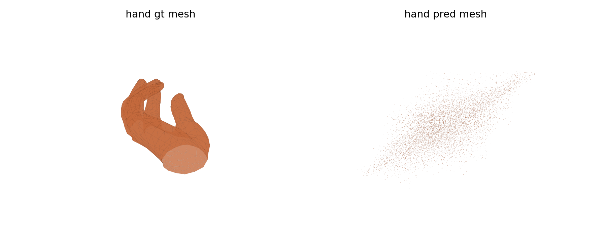
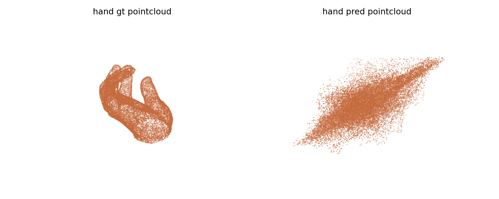
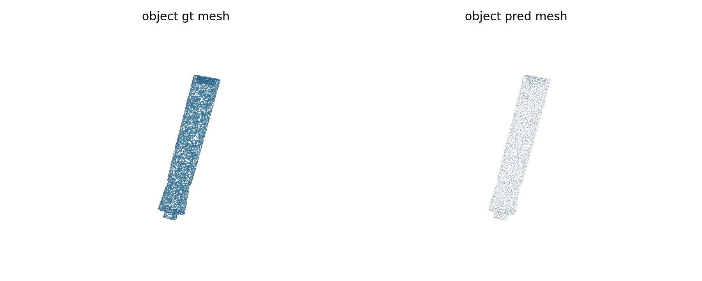
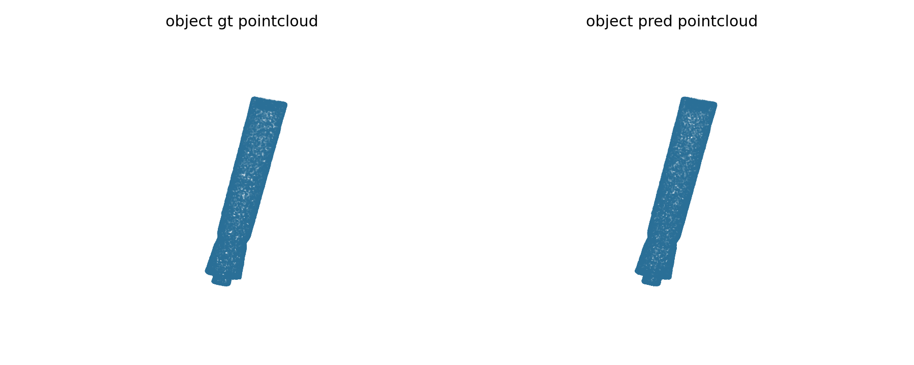
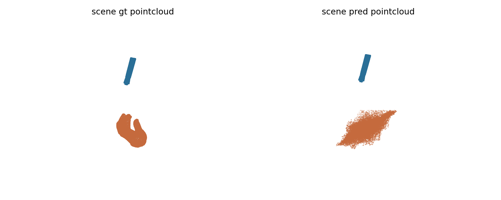

Experiment goal
在新的隔离约束下重跑 frame 30 诊断。禁止使用 worktree 内现有 roundtrip 脚本，只允许 DexYCB bridge 负责导出 GT hand/object mesh，再在 `TRELLIS.2-main` 里用官方 TRELLIS.2 shape encoder/decoder 核心代码完成编解码，并输出 mesh 与 point-cloud 结果。
experiment completed and proved the bad-looking geometry persists even after isolating away the previous custom roundtrip wrapper. Negative diagnosis: official core path still explodes the hand mesh to 1.37M vertices / 4.53M faces and inflates the object to 63k vertices / 126k faces
在新的隔离约束下重跑 frame 30 诊断。禁止使用 worktree 内现有 roundtrip 脚本，只允许 DexYCB bridge 负责导出 GT hand/object mesh，再在 `TRELLIS.2-main` 里用官方 TRELLIS.2 shape encoder/decoder 核心代码完成编解码，并输出 mesh 与 point-cloud 结果。
PASS with negative diagnosis。之前“重建 mesh/pointcloud 看起来仍然不正确”的现象，在更严格的隔离条件下仍然复现，所以问题不能只归因于旧的自定义 roundtrip wrapper。至少对 hand 分支来说，官方 shape core 路径本身在这类输入上也会产生异常密度和异常拓扑。

Official core path still generates an extremely dense hand mesh.

Point-cloud view of the same failure mode for the hand branch.

Object remains less catastrophic than hand, but is still inflated.

Point-cloud view of the isolated official object roundtrip.
Combined camera-space scene comparison after denormalizing predicted meshes.

Combined point-cloud comparison under the isolated official path.